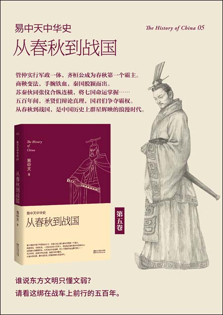

开篇易中天中华吏
《易中天中华史》是由厦门大学易中天教授编写的三十二卷关于中华历史的系列丛书，该系列从史前时代一直讲述到中华人民共和国邓小平时代，讲述并分析每个中国朝代的历史因素与政治体制问题，此外还讲述了部分中亚欧洲历史。该丛书分为六部三十二卷，目前处于边写边出版的状态，现已出版至第三部《隋唐》总第十六卷《安史之乱》。该丛书在大陆网站提供电子版公开收费阅读，并且已在韩国与香港地区发行韩文译版及繁体中文版
第一部：先秦
| 总序 | 卷一 | 卷二 | 卷三 | 卷四 | 卷五 | 卷六 |
|---|---|---|---|---|---|---|
| 文明的意志与中华的位置 | 祖先 | 国家 | 奠基者 | 青春志 | 从春秋到战国 | 百家争鸣 |
| 天下大势 | 夏娃造反 | 国家与人 | 生于忧患 | 刺客 | 祸起萧墙 | 这世界有救吗 |
| 历史谜团 | 女娲登坛 | 城市跟你说 | 定音鼓 | 情人 | 五侯争霸 | 哪个社会好 |
| 伊斯兰 | 伏羲设局 | 从雅典到费城 | 西周大封建 | 战士 | 南方崛起 | 君权，民权，人权 |
| 西方 | 炎帝东征 | 谢绝宗教 | 天下为家 | 人臣 | 礼坏乐崩 | 活着为什么 |
| 中华 | 黄帝出场 | 告别图腾 | 两个基本点 | 使节 | 商鞅变法 | 生存之道 |
| 关键时刻 | 尧舜下课 | 闯他一回红灯 | 根本所在 | 鬼神 | 合纵连横 | 制度与人性 |
| 答读者 | 破冰之旅 | 巡航日志 | 时间开始了 | 年轻就是好 | 这格子不好走 | 能做河伯也不错 |
第二部：秦汉魏晋南北朝
| 卷七 | 卷八 | 卷九 | 卷十 | 卷十一 | 卷十二 |
|---|---|---|---|---|---|
| 秦并天下 | 汉武的帝国 | 两汉两罗马 | 三国纪 | 魏晋风度 | 南朝，北朝 |
| 始皇革命 | 帝国之初 | 世界 | 袁绍揭幕 | 时代 | 大换血 |
| 陈胜造反 | 独尊儒术 | 历史 | 魏武挥鞭 | 人物 | 鲜卑人 |
| 项羽争雄 | 高度集权 | 制度 | 孙刘联盟 | 精神 | 南朝试验田 |
| 刘邦称帝 | 官治天下 | 信仰 | 三分天下 | 风尚 | 宗教问题 |
| 大秦没死 | 是非功过 | 理念 | 武侯治蜀 | 价值观 | 再造新文明 |
| 桃园惊梦 | |||||
| 我们有选择吗 | 汉武帝下诏罪己了吗 | 为什么是罗马 | 何时忘却三国 | 那些女人 | 一国两朝，南方北方 |
第三部：隋唐
| 卷十三 | 卷十四 | 卷十五 | 卷十六 |
|---|---|---|---|
| 隋唐定局 | 禅宗兴起 | 女皇武则天 | 安史之乱 |
| 隋炀帝 | 拜占庭 | 夺宫 | 开元新政 |
| 唐太宗 | 阿拉伯 | 弄权 | 潜在危机 |
| 官僚政治 | 禅 | 血洗 | 动乱始末 |
| 混血王朝 | 佛教中国化 | 变脸 | 走向沉沦 |
| 世界帝国 | 大洗牌 | 无字碑 | 唐诗精神 |
| (无后记) | (无后记) | (无后记) | (无后记) |